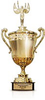

Наши сильные стороны
На сегодняшний день наша компания обладает рядом преимуществ, позволяющих быть лидером тюменского региона, среди которых:
- Широкий ассортимент качественного металлопроката и возможность приобретения нужного товара в любое время и в любых объемах;
- Максимальная точность отгрузки;
- Металлообработка: резка, рубка, раскрой металла по размерам заказчика;
- Удобное месторасположение в сочетании с производственными мощностями;
- Оптимальная логистика — транспортная, поставок и складская;
- Система скидок.
Наши награды
Лучшая металлобаза России 2011
Компания «Тримет» становится победителем конкурса «Лучшая металлобаза России 2011» в номинации «Лучшая металлобаза Урала»
 Компания «ТРИМЕТ» — универсальный поставщик черного металлопроката, производитель кровельных и стеновых материалов. Входит в тройку лидеров тюменского региона по объемам реализации черного металлопроката.
Компания «ТРИМЕТ» — универсальный поставщик черного металлопроката, производитель кровельных и стеновых материалов. Входит в тройку лидеров тюменского региона по объемам реализации черного металлопроката.
Основана 21 мая 2002 г. С момента основания прошла путь от небольшого склада до крупного металлоцентра, осуществляющего комплексное снабжение металлопрокатом — в несколько раз увеличив оборот и ассортимент.
С 2004 г. «Тримет» входит в состав Российского Союза Поставщиков Металлопродукции (РСПМ).
Компания «Тримет» — лауреат конкурса «Лучшая металлобаза России» в 2011 и 2012 годах
На начальном этапе развития руководство поставило перед собой основную задачу — занять прочную позицию на тюменском рынке. И сегодня она успешно реализована. В настоящее время «Тримет» входит в тройку лидеров тюменского региона по объемам реализации черного металлопроката.
Но самое важное — то, что за эти годы был приобретен бесценный опыт, создана обширная клиентская база, налажены долгосрочные взаимоотношения с крупными заводами- изготовителями металлопроката России и зарубежья.
Добиться таких результатов позволило соблюдение следующих основных принципов работы:
- Глубокое понимание производственных проблем и задач клиентов;
- Честность и порядочность во взаимоотношениях с партнерами;
- Профессионализм и компетентность персонала и руководящего звена.
Кроме того, наша компания обладает рядом преимуществ.